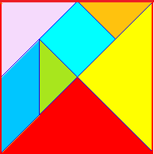
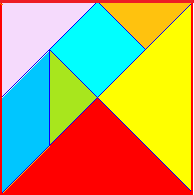

JUGAMOS CON EL TANGRAM
|  | |
|
|
|
Con el ordenador deberás hacer estos dos animales
|
Instrucciones:
¡¡Animo!! Escena Incluida en la unidad "Rompecabezas" del Proyecto Descartes |
|  | |
|
|
|
Con el ordenador deberás hacer estos dos animales
|
Instrucciones:
¡¡Animo!! Escena Incluida en la unidad "Rompecabezas" del Proyecto Descartes |
|
Vas a construir tu tangram clásico sobre una cartulina
Deberás mostrar tu tangram a tu profesor o profesora, antes de recortarlo, y entregarle un documento en el que escribas las medidas de los lados de cada pieza. No olvides escribir tu nombre. |
Ahora vamos a ver si controlas el Tangram. Se pide que construyas figuras que cumplan las siguientes condiciones:
EN ESTOS EJERCICIOS NO ES NECESARIO USAR TODAS LAS PIEZAS
1.- Construye un trapecio isósceles. Debes dar por lo menos dos posibilidades.
2.- Construye un trapecio rectángulo .¿Cuánto mide la altura? (Dos posibilidades).
3.- Construye un rectángulo cuya área sea el doble de la de la pieza cuadrada.
4.- Construye un triángulo isósceles (con más de una pieza del Tamgram). Tres posibilidades.
5.. Construye un hexágono (no regular).
6.- Construye un pentágono (no regular).
Calcula el área de cada una de las piezas de tu Tangram
Lea el párrafo que aparece abajo y complete las palabras que faltan.
No puedes utilizar regla ni transportador. Sólo puedes tener las siete piezas de tu Tangram
Para hacer estos ejercicios no puedes utilizar regla. Si puedes manipular las fichas del Tangram
CALCULANDO LADOS
1.- ¿Cuánto miden los tres lados de un triángulo grande?
2.- ¿Cuánto miden los tres lados del triángulo mediano?
3.- ¿Cuanto miden los tres lados de un triángulo pequeño?
CALCULANDO ALTURAS
4a).- Traza en tus piezas las 3 alturas de un triángulo grande.
4b).- Calcula las medidas de las tres alturas de un triángulo grande?
4c).- ¿Dónde se cortan las 3 alturas de ese triángulo ? ¿Cómo se llama el punto donde se cortan las tres alturas de un triángulo?
5.-Repite el ejercicio anterior con el triángulo mediano.
6.- Repite el ejercicio anterior con el triángulo pequeño.
7.-Calcula la diagonal del cuadrado del Tangram.
8.-Calcula la altura del romboide de tu Tangram.